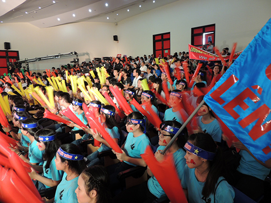

Gameshow truyền hình: Học trò xứ Quảng của QRT thắp sáng tinh thần ham học

Lần cập nhật cuối lúc Thứ tư, 25 Tháng 11 2015 09:41 Viết bởi Administrator Thứ năm, 08 Tháng 10 2015 00:00
Quảng Nam - mảnh đất có truyền thống lịch sử và văn hóa lâu đời. Người Quảng Nam có truyền thống hiếu học. Trên nền tảng cơ bản đó, ý tưởng về việc thực hiện một gameshow đang được Đài Phát thanh - truyền hình Quảng Nam (QRT) và Sở GD-ĐT cùng phối hợp thực hiện với tên gọi: “Học trò xứ Quảng”. Chương trình nhằm tạo sân chơi chắp cánh cho những tài năng, mở ra chân trời tri thức, hướng đến thế hệ trẻ, khơi dậy trong các em niềm tự hào là học trò trên mảnh đất địa linh nhân kiệt.

Ấp ủ ý tưởng về một gameshow trên sóng truyền hình đã có từ nhiều năm nay, nhưng để thực hiện được đối với một đài địa phương như Quảng Nam không phải là chuyện dễ. Hàng loạt khó khăn đặt ra như ý tưởng chủ đề, phần mềm, nguồn lực. Ngay từ đầu năm 2015, tập thể Ban giám đốc và các phòng chuyên môn của đài tỉnh đã tập trung cho công tác chuẩn bị với nhiều phương án phù hợp được lựa chọn để bắt tay vào thực hiện gameshow.
Về ý tưởng, gameshow “Học trò xứ Quảng” phải là sân chơi trí tuệ lành mạnh, bổ ích dành cho đối tượng là học sinh THPT, THPT chuyên, phổ thông dân tộc nội trú trên địa bàn tỉnh. Thí sinh được chọn tham gia cuộc thi phải là học sinh tiêu biểu của trường; có thành tích học tập, hạnh kiểm tốt, có sự hiểu biết nhiều lĩnh vực và xử lý nhanh nhạy các tình huống.
Về hình thức tổ chức, gameshow có 13 cuộc thi trong vòng hơn 1 năm (dự kiến từ tháng 11.2015 đến 11.2016). Trong đó có 9 cuộc thi tháng, 3 cuộc thi quý và cuộc thi chung kết năm. Mỗi cuộc thi tháng gồm 4 trường tham gia tranh tài; 3 thí sinh cao điểm nhất tháng và thí sinh có điểm nhì cao nhất sẽ tham gia vòng thi quý. Tương tự, 3 thí sinh cao điểm nhất quý và thí sinh có điểm nhì cao nhất quý sẽ tham gia vòng thi chung kết năm. Bên cạnh các phần thi chính dành cho thí sinh, chương trình cũng sẽ dành thời gian giao lưu với các cổ động viên và khán thính giả.
Bốn phần thi chính của gameshow bao gồm: khởi động (vòng 1), tìm hiểu xứ Quảng (vòng 2), xứng danh đất học (vòng 3) và về đích (vòng 4). Giữa các vòng thi chương trình sẽ dành thời gian để giao lưu với khán giả tại địa điểm ghi hình và khán thính giả truyền hình. Chương trình sẽ đặt câu hỏi, các khán giả, cổ động viên có thể trả lời trực tiếp, gửi thư trả lời hoặc trả lời qua tin nhắn.
Về đơn vị phối hợp thực hiện, gameshow sẽ do QRT chủ trì, các đơn vị phối hợp Sở GD-ĐT và Trung tâm Công nghệ thông tin và truyền thông Sở Thông tin và truyền thông. Trong điều kiện nguồn kinh phí còn nhiều khó khăn, rất mừng là đến thời điểm hiện nay có 2 đơn vị nhận tài trợ, hỗ trợ một phần kinh phí cho việc đầu tư thiết bị, máy tính, phần mềm, công tác tổ chức ma-ket, sân khấu, hiện trường cho gameshow là Công ty CP Ô tô Chu Lai - Trường Hải và Chi nhánh Viettel Quảng Nam thuộc Tập đoàn Viễn thông Quân đội.
QRT chịu trách nhiệm chính trong việc xây dựng format chương trình, xây dựng logo chương trình và logo các phần chơi; tổ chức kịch bản, xây dựng ê-kíp sản xuất, triển khai xe màu ghi hình lưu động (12 lần thi), truyền hình trực tiếp trận chung kết; đồng thời tổ chức biên tập, xử lý hậu kỳ, phát sóng, quảng bá gameshow. Ông Hà Thanh Quốc - Giám đốc Sở GD-ĐT khẳng định quyết tâm sẽ cùng với đài tỉnh xây dựng và tổ chức gameshow thành công. Theo ông Quốc, qua chương trình này sẽ tạo ra được sân chơi giúp các em học sinh nâng cao khả năng hiểu biết, đồng thời đa dạng hóa hình thức giáo dục nhằm tăng cường tính chủ động và hiệu quả tiếp thu kiến thức, góp phần giáo dục toàn diện cho học sinh. Điều quan trọng hơn, chương trình sẽ giúp học sinh hiểu biết thêm về mảnh đất và con người xứ Quảng. Ngoài ra, thông qua gameshow, ngành giáo dục tuyển chọn học sinh THPT tiêu biểu của tỉnh tham dự các kỳ thi tương tự của khu vực và toàn quốc.
Lãnh đạo Sở GD-ĐT đã họp chuyên môn với các đơn vị trực thuộc, các trường; chủ trì thành lập Hội đồng đề thi, xây dựng bộ, các gói câu hỏi đề thi phù hợp với từng phần thi và tính toán phương án đảm bảo tính bí mật của ngân hàng đề thi. Nhiều thầy cô có kinh nghiệm trong nghề sẽ được mời tham gia Ban cố vấn. Sở GD-ĐT cũng đã thông tin rộng rãi trong toàn ngành; ưu tiên chỉ đạo, hướng dẫn các trường THPT trong toàn tỉnh tham gia gameshow trên cơ sở hình thức, thể lệ cuộc thi đã ban hành. Theo Sở GD-ĐT, địa điểm tổ chức gameshow sẽ được thực hiện tại hội trường Trường THPT chuyên Nguyễn Bỉnh Khiêm (TP.Tam Kỳ).
Về phần mềm của gameshow đã được Trung tâm Công nghệ thông tin và truyền thông phối hợp triển khai. Anh Phạm Văn Tài - Phó Giám đốc Trung tâm Thông tin và truyền thông cho biết, phần mềm đang trong giai đoạn hoàn chỉnh để đưa vào chạy thử. Các gói câu hỏi đề thi, đáp án được bố trí sắp xếp trong phần mềm để quản lý, sử dụng theo phương thức trình chiếu trên máy vi tính.
Trên cơ sở phương án đã được thống nhất cao giữa các đơn vị phối hợp, dự kiến số đầu tiên của gameshow sẽ được phát sóng vào lúc 20 giờ ngày 15.11.2015. Đây được xem như là món quà nhân kỷ niệm 30 năm ngày Nhà giáo Việt Nam 20.11 năm nay. Hy vọng từ sân chơi của gameshow “Học trò xứ Quảng” này sẽ góp phần thắp sáng hơn tinh thần ham học của các thế hệ học trò xứ Quảng.
“Này bạn ơi ta học trò xứ Quảng. Mang trong tim mình truyền thống đất học ngàn năm. Ta quyết xứng danh quê hương địa linh nhân kiệt. Ngũ phụng tề phi soi sáng bước đường ta đi… Ta mau cùng về thử sức với ngàn điều hay. Tô thắm ước mơ vươn lên đỉnh cao trí tuệ. Để ngày mai đây tung cánh đắp xây cuộc đời. Tất cả vì quê hương đất Quảng muôn ngàn yêu thương…”. Lời bài hát viết riêng cho gameshow “Học trò xứ Quảng” của nhạc sĩ Lê Xuân Bá, biên tập viên Phòng Văn nghệ - giải trí của QRT, thành viên của ê-kíp thực hiện như đang thôi thúc tấm lòng, sự tâm huyết của mọi người để làm tốt hơn công tác chuẩn bị, chạy đua với thời gian để “Học trò xứ Quảng” - gameshow đầu tiên được triển khai thực hiện của QRT lên sóng phục vụ khán giả truyền hình, nhất là phục vụ thiết thực cho phong trào học tập của các thế hệ học sinh trên địa bàn tỉnh.
Nội dung và thể lệ các phần thi
Vòng 1 - khởi động: Trong vòng 60 giây, mỗi thí sinh trả lời 10 câu hỏi thuộc các lĩnh vực: toán, lý, hóa, sinh, văn, sử, địa, tiếng Anh, nghệ thuật, thể thao... Mỗi câu trả lời đúng được 10 điểm, trả lời sai không bị trừ điểm. Thí sinh trả lời hết thời gian hoặc hết 10 câu hỏi.
Vòng 2 - tìm hiểu xứ Quảng: Phần thi có 6 gói câu hỏi được đánh số thứ tự từ 1 đến 6. Mỗi gói câu hỏi bao gồm nhiều lĩnh vực liên quan đến xứ Quảng như: lịch sử, địa lý, danh nhân, văn hóa, ẩm thực… Mỗi gói có 3 câu hỏi, gồm: 1 câu 10 điểm, 1 câu 20 điểm và 1 câu 30 điểm. Mỗi thí sinh có 1 lượt chọn gói câu hỏi. Thời gian trả lời mỗi câu hỏi là 10 giây. Trong trường hợp thí sinh lựa chọn gói câu hỏi nhưng không trả lời được thì 3 thí sinh còn lại sẽ bấm chuông giành quyền trả lời (chỉ một lượt thí sinh bấm chuông nhanh nhất được trả lời). Thí sinh giành được quyền trả lời đúng sẽ nhận được số điểm của câu hỏi, thí sinh lựa chọn câu hỏi bị trừ đi 1/2 số điểm của câu hỏi đó. Ngược lại, nếu thí sinh giành quyền trả lời sai sẽ bị trừ đi 1/2 số điểm của câu hỏi, còn người lựa chọn gói câu hỏi không bị trừ điểm.
Vòng 3 - xứng danh đất học: Phần thi có 8 câu hỏi dưới dạng trắc nghiệm. Mỗi câu hỏi có 4 đáp án (trong đó chỉ có 1 đáp án đúng). Mỗi thí sinh có 2 lượt lựa chọn câu hỏi. Thời gian suy nghĩ trả lời: 30 giây. Bốn thí sinh cùng trả lời bằng máy tính. Thí sinh trả lời đúng trong vòng 10 giây đầu tiên (0 - 10 giây) được 30 điểm, thí sinh trả lời đúng trong vòng 10 giây tiếp theo (11 - 20 giây) được 20 điểm. Thí sinh trả lời đúng trong 10 giây cuối (21 - 30 giây) được 10 điểm. Thí sinh trả lời không đúng đáp án: 0 điểm.
Vòng 4 - về đích: Phần thi có các gói câu hỏi: 40, 60, 80 điểm. Gói 40 điểm gồm: 2 câu 10 điểm và 1 câu 20 điểm. Gói 60 điểm gồm: 1 câu 10 điểm,itnbk.edu.vnm và 1 câu 30 điểm. Gói 80 điểm gồm: 1 câu 20 điểm và 2 câu 30 điểm. Mỗi thí sinh có 1 lượt lựa chọn gói câu hỏi. Thí sinh trả lời đúng ghi được điểm của câu hỏi đó, trả lời sai thì một trong 3 thí sinh còn lại sẽ giành quyền trả lời bằng cách bấm chuông nhanh. Thí sinh trả lời đúng giành được điểm, trả lời sai sẽ bị trừ 1/2 số điểm của câu hỏi. Mỗi thí sinh được đặt “Ngôi sao hy vọng” 1 lần, trả lời đúng được gấp đôi số điểm của câu hỏi đó, trả lời sai sẽ bị trừ số điểm của câu hỏi đó.
MAI HÀ THI (baoquangnam.com.vn)
- itnbk.edu.vn
- 22/07/2015 15:14 - Tra cứu điểm thi THPT Quốc gia năm 2015
- 02/04/2015 10:22 - Bộ Giáo dục công bố đề thi minh họa kỳ thi THPT qu…
- 27/02/2015 00:00 - 10 điểm nổi bật của quy chế kỳ thi THPT quốc gia
- 03/02/2015 07:03 - Băn khoăn với đổi mới giáo dục
- 31/01/2015 07:37 - Thứ trưởng Bộ GD-ĐT Nguyễn Vinh Hiển làm việ…